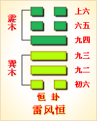

第三十二卦初六爻详解 第三十二卦九二爻详解 第三十二卦九三爻详解
第三十二卦九四爻详解 第三十二卦六五爻详解 第三十二卦上六爻详解
周易第三十二卦 恒 雷风恒 震上巽下
恒：亨，无咎，利贞，利有攸往。
彖曰：恒，久也。刚上而柔下，雷风相与，巽而动，刚柔皆应，恒。恒亨无咎，利贞;久於其道也，天地之道，恒久而不已也。利有攸往，终则有始也。日月得天，而能久照，四 时变化，而能久成，圣人久於其道，而天下化成;观其所恒，而天地万物之情可见矣!
象曰：雷风，恒;君子以立不易方。
初六：浚恒，贞凶，无攸利。象曰：浚恒之凶，始 求深也。
九二：悔亡。象曰：九二悔亡，能久中也。
九三：不恒其德，或承之羞，贞吝。象曰：不恒其德，无所容也。
九四：田无禽。象曰：久非其位，安得禽也。
六五：恒其德，贞，妇人吉，夫子凶。象曰：妇人贞吉，从一而终也。夫子制义，从妇凶也。
上六：振恒，凶。象曰：振恒在上，大无功也。
恒卦卦象，雷风恒卦的象征意义
恒卦，这个卦是异卦相叠，巽为下卦，震为上卦。震为男、为雷;巽为女、为风。震刚在上，巽柔在下。刚上柔下，造化有常，相互助长。阴阳相应，常情，故称为恒。
恒卦位于咸卦之后，《序卦》中说道：“夫妇之道不可以不久也，故受之以恒。恒者，久也。”咸卦描述男女感应，推及夫妇之道;在迅速引发情感之后，接着要考虑的是长久维持，所以出现了恒卦。
《象》中这样解释恒卦：雷风，恒;君子以立不易方。这里指出，恒卦的卦象是巽(风)下震(雷)上，为风雷交加之表象，二者常是相辅相成而不停地活动的形象，因而象征常久;君子效法这一现象，应当树立自身的形象，坚守常久不变的正道。
恒卦象征长久，喻示的道理是恒心有成，属于中上卦。象曰：鱼翁寻鱼运气好，鱼来撞网跑不了，别人使本挣不来，谁想一到就凑合。
此卦卦名为恒。《说文》中说：“恒，常也。”也就是说“恒”是长久的意思。前面的咸卦讲男女感应相合，于是结为夫妇，但夫妇之道应当天长地久，白头到老，所以咸卦的下面是恒卦。
恒卦卦画
恒卦的卦画是三个阴爻三个阳爻，其排列顺序与咸卦正好相反。
恒卦卦象
从卦象上进行分析，恒卦上卦为震为雷为长子，下卦为巽为风为长女，雷动风随，这是自然界最大的永远相随的形象，也是人们都能看到的形象。一打雷接着就会刮风,古人从这一自然现象来说明阴阳相随的道理。从而引申出夫妇亦应当像雷与风一样永远和睦相处。上一卦咸卦为少男与少女，这一卦则变为长子长女，这是喻示着男女由年少的相恋，到现在已经长大成熟，成为持久的夫妇关系。恒卦中内卦为巽外卦为震，则表示妻主内男主外的生活模式。
关键词：周易,恒卦,雷风恒,震上巽下
恒卦：亨通，没有灾祸，吉利的占问。有利于出行。
初六：挖土不止。占问凶兆，没有什么好处。
九二：没有什么可悔恨。
九三：不能经常有所获，有人送来美味的食物。占得艰难的征兆。
九四：田猎打不到禽兽。
六五：经常有所获。占问结果，女人吉利，男人凶险。
上六：动荡不止。凶险。
①恒是本卦的标题。恒的意思是久常。全卦内容是日常生活和生产上的事。作标题的“恒”字是卦中多见词。
②浚：挖土。
③德：用作“得”，指收获。
④承：奉送。羞：即“馐”，意思是美味。
⑤振：振动，动荡。